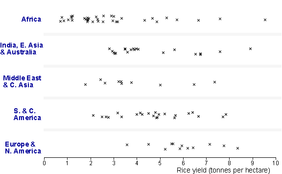

Rice yields (tonnes/hectare) in 1996/97 for major rice producers

Box plots are most useful to highlight the differences between several groups.
The jittered and stacked dot plots show too much detailed information about the spacing of values so the major differences between rice yields in the regions do not stand out. The histograms summarise the differences better.
The box plots only show the most important features of the five distributions, and therefore highlight differences between the regions.
The basic dot plots do not show how two African countries (Egypt and Morocco) are very different from the other (sub-saharan) African countries. The modified dot plots show them as separate crosses.
The data set contains rice yields (in tonnes per hectare) of all major rice-producing nations in the world in 1996/97. The main features are: